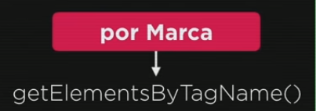

Instala as extenções LIVE SERVER e o Node.js exec.
Depois control + shift + p e digita live server. Dessa forma as alterações que faço no meu código aparecem automaticamente no navegador (Ir em file e deixar no Auto Save).
DOM é um acronimo para Document Object Model (Modelo de Objetos para Documentos). Basicamente é um conjunto de objetos dentro do meu navegador que vai dar acesso aos componentes internos do meu website.
Dentro do window tenho o objeto: location, que diz a localização do meu site/URL; o document que é o documento atual; e o history que é o nosso histórico de navegação. Quem ta em baixo são chamados filhos (children) e em cima são os pais/parentes (parents). Todos são chamados elementos.
No script selecionamos o que queremos com essa árvore. Ex: window.document
window.document.write(window.document.charset)
Podemos selecionar qualquer elemento para navegar na nossa árvore DOM. São cinco metodos de acesso:

Marca são as tags. Para selecionar por marca:

var p1 = window.document.getElementsByTagName ('p')[0]
window.document.write('Está escrito assim:' + p1.innerText)
Seleciona vários elementos. No exemplo seleciona todos os paragráfos. Para escolher um parágrafo específico usamos o [0]. O número do parágrafo na ordem, começa do 0. A segunda linha é para escrever (write) na tela o texto que está dentro daquela variável (innerText-texto interno).
Com javascrip posso alterar determinado estilo. Primeiro criamos uma variável, dizendo que aquela variável irá receber determinada parte do meu documento. Depois selecionamos a variável, em seguida o estilo e depois a propriedade que queremos alterar:
var p1 = window.document.getElementsByTagName ('p')[0]
p1.style.color = 'pink'
var corpo = window.document.body
corpo.style.background = 'black'
window.document.body.style.background = 'black' (não funciona com head)
Podemos usar o innerHTML, que puxar todo o código, todas as tags. (Se uso só o innerText ele puxa só o texto, um strong nao irá ser replicado).
Texte: texto com strong
var p10 = window.document.getElementsByTagName('p')[10]
document.write(p10.innerHTML)
Em um alert, ele vem mostrando a tag <strong>. No alert devemos usar o innerText para pegar o texto sem a formatação.
Podemos selecionar pelo Id também (como é singular, uma seleção específica, não precisamos de colchetes):
var IDmsg = window.document.getElementById('msg')
IDmsg.style.background = 'white'
IDmsg.innerText = 'Olá amigo'
Podemos alterar o texto com innerText.
O comando completo seria:
window.document.getElementById('msg').innerText = 'Olá amigo'
Quando usamos name podemos selecionar o objeto pelo nome (usamos o colchete para selecionar o nome que queremos, como o elements está no plural, irá selecionar vários elementos, precisamos específicar qual queremos). Só em tags name:
var msg2name = document.getElementsByName('msg2')[0]
msg2name.innerHTML = 'Olá parceiro'
Lembrando que o getElementsByTagName() seleciona pela Tag (Marca).
Por class:

Podemos usar, e é até recomendável, usar o seletor no lugar dos outros vistos acima:
var msg = window.document.querySelector('div#msg')
Para minha div com id msg. (Se for class usamos o ponto = .).